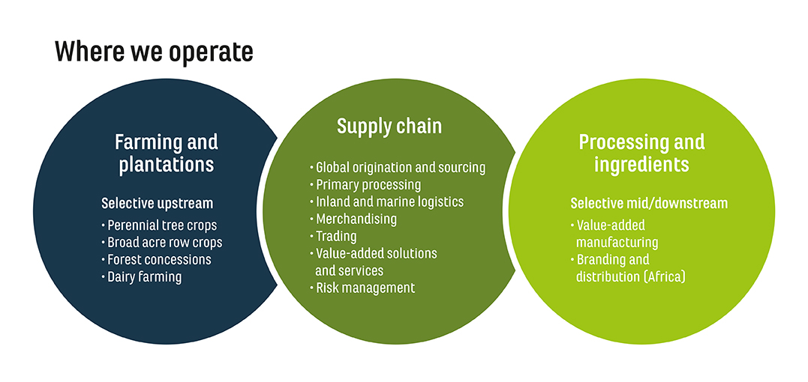

Olam International is a leading food and agri-business company in the world, operating from seed to shelf in 70 countries, supplying food and industrial raw materials to over 23,000 customers worldwide.

-->
Company Location
Job Details
My role at Olam included monitoring, analyzing, and interpreting smart sensor data to report it at a daily review meeting. This was done to maintain machine efficiency by predicting when a machine was due for servicing, or detecting causes of machine breakdown, if any.
Lesson(s) learnt
I learnt to be more expressive and offer any input I have
I learnt to not be afraid to criticise colleagues or even superiors sometimes